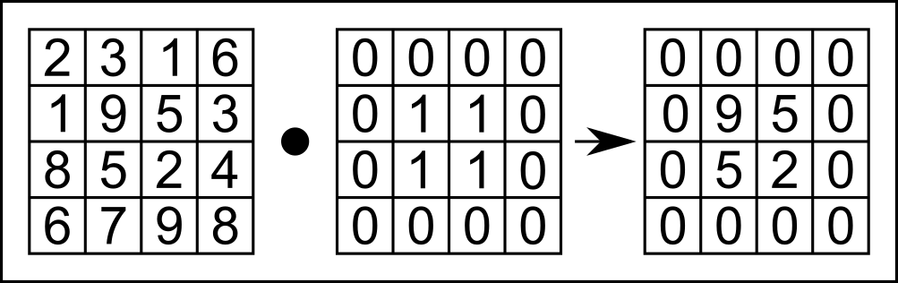
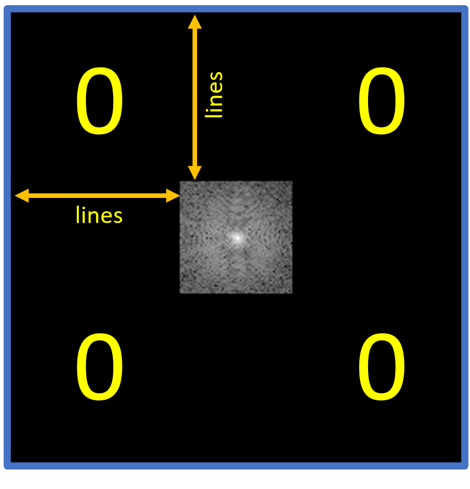
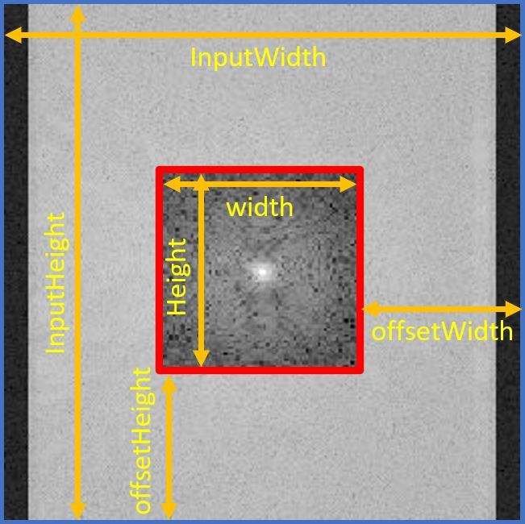
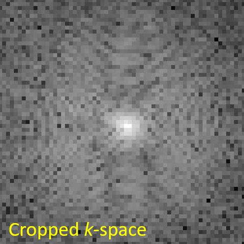
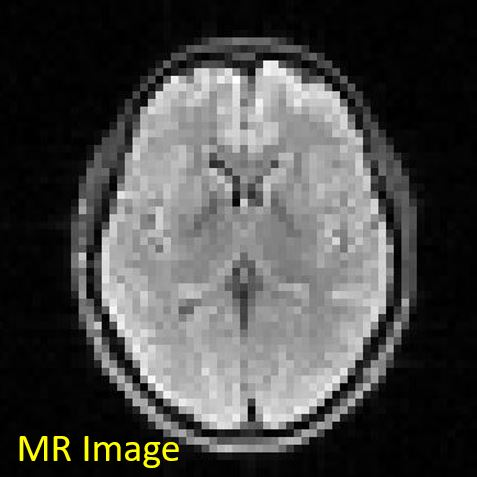
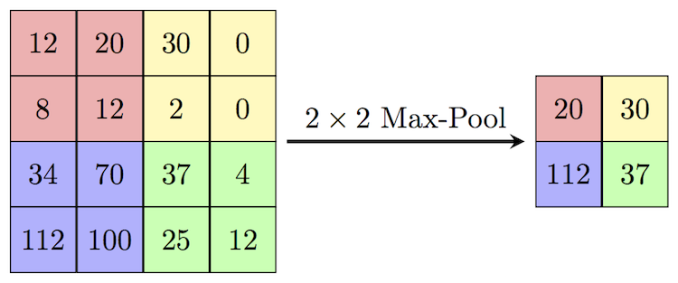
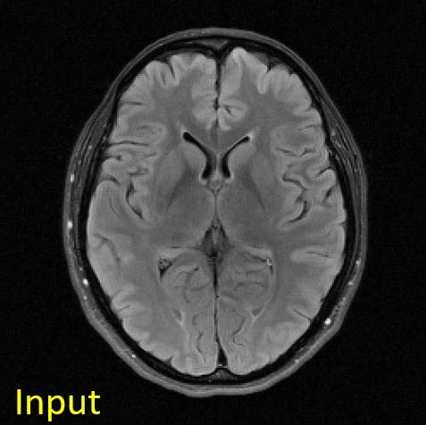
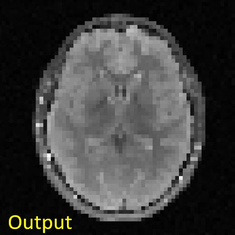

Overview
4. Filters
In your exercises, you have learned the process of filtering an image. In this section, we'll look at the relation between image and $k$-space with respect to applying a filter or multiplication operation on one of them. Feel free to use and look at the code base from exercise 4 to get inspired.
We'll first decrease the resolution (sharpness) of the image by manipulating the image itself or the $k$-space. Then, we're going to decrease the array size (sometimes also called resolution, this term is ambiguous) in 2 different ways.
4. 1 Sinc Filter and Box Multiplication
4.1.1 Sinc Filter Applied on Image
The (normalized) sinc function is defined as follows
$$ \mathrm{sinc} (x) := \frac{\mathrm{sin}(\pi x)}{\pi x} $$
Please implement a 2D sinc filter such that it is working as a filter in $x$- and a filter in $y$-direction independently. This means that during filtering you can multiply a sinc in $x$ and a sinc in $y$ direction (as opposed to, e.g., using an absolute 2D distance from the point that the filter is applied to).
According to exercise 4, implement
the class in SincFilter2d.java. This filter has two parameters: filterSize and downScale. Suppose
we have input $x$, with $x$ being an integer and $x \in [-\mathrm{filterSize}/2, \mathrm{filterSize}/2)$,
the output is: $$\mathrm{out} = \mathrm{sinc}(x/\mathrm{downScale})$$
package project;
import mt.LinearImageFilter;
import org.apache.commons.math3.analysis.function.Sinc;
public class SincFilter2d extends LinearImageFilter{
public SincFilter2d(int filterSize, float downScale) {
super(filterSize, filterSize, "Sinc2d (" + filterSize + ", " + downScale + ")");
var s = new Sinc(true);
/* your code here, get inspiration in exercise 4 if you don't remember */
normalize();
}
}
You can evaluate the sinc function from the used library with the s.value(...input here...) method.
You should now apply the SincFilter2d filter to the complex MR image. But how? The filter is real-valued, and
the convolution operation with a certain filter is linear. Consequently, you can apply the real filter
to the real and imaginary parts of your signal to be filtered separately.
Please implement a class LinearComplexImageFilter which does exactly that: applying a filter to real and imaginary parts separately. Your application of the filter will look like the following:
SincFilter2d realFilter = new SincFilter2d(31, 4.0f);
var complexFilter = new LinearComplexImageFilter(realFilter);
ComplexImage filteredImage = complexFilter.apply(mrImage);
Please show the filtered MR image (magnitude is enough) and its corresponding $k$-space! Please describe the difference
between the original and the filtered $k$-space. Look at both on a logarithmic scale, so that you can see the differences.
Mind that the intensity differences you can see on a logarithmic scale are huge, so if you use log10, a difference
of 1 is actually a factor of 10 difference.
4.1.2 Box Function Applied to $k$-Space
So far, you should have implemented a filter for the complex image and used the apply() method.
The effect on $k$-space by filtering the image is described by the so-called convolution theorem, but let's not dive
into theory here.
Now let's do it the other way around: manipulate $k$-space data and observe how it changes the image. We're choosing a box multiplication, which instead performs point-wise multiplication between the input $k$-space matrix and a box function, as shown in Figure 4.1.

Figure 4.1. Illustration of point-wise multiplication of a box function, which performs point-wise multiplication between the example k-space array (left) and the box function (middle).
To implement 2D box multiplication, we implement the setOuterToZero() method in ComplexImage.java.
For practical implementation, we're suggesting the method of setting certain lines to zero, then certain columns.
You will need to use the SetAtIndex() method for this.
public void setOuterToZero(int lines, int axis)
Here, the parameter lines defines the zero-padding size of the box function (in Figure 4.1, this was set to 1),
and the parameter axis defines on which axis the box filter is applied (0 is the "first" axis, $x$, and 1 is the
second axis, $y$).
With this function, you can set everything but the center of the kSpace buffer to 0:
kSpace.setOuterToZero(96,0); // kx-direction
kSpace.setOuterToZero(96,1); // ky-direction
Figure 4.2 shows a schematic of the use of the parameter lines= 96 as used in our code example.
The black "0"-areas in Figure 4.2 show where you should set $k$-space to 0.

Figure 4.2. A schematic of $k$-space after running the setOuterToZero() method. Shown here is the parameter lines = 96 in both dimensions as used in our code example, as well as the k-Space after application of the method.
Apply the code shown above in your Project.java.
Please show the zeroed $k$-space (use the previously unfiltered $k$-space for zeroing) and its corresponding image!
Is the image similar to the sinc-filtered image? If so, why?
In your Project report (2.3), you should:
- (2.3) Explain the properties of high-frequency and low-frequency components in $k$-space. What components are relevant for the image contrast? What about the image details?
- (2.3.1) Explain the effect of the 2D Sinc filter on the MR image and on $k$-space. What can be seen in $k$-space?
- (2.3.2) Explain the effect on the MR image when setting high-frequency parts of $k$-space to zero and compare the result with that of the 2D Sinc filter.
- (2.3.2) Play around with different values for
lines. How large can you set this value without a visible loss in image quality? At what value can the heart no longer be recognized? Explain how this could be used for image compression.
4.2 Reducing the Image Size
We'd like you to understand the conceptional difference between the "sharpness" of an image, which is determined by the information content it represents (visible in $k$-space, e.g.), and its array size, which confines the amount of information that can be represented.
4.2.1 Cropping $k$-Space
When the (array) size of $k$-space is reduced, so is the (array) size and resolution of the reconstructed image, as the (i)DFT / (i)FFT always connects 2 spaces of equal length. We can perform this operation by cropping $k$-space to its center frequencies.
For this experiment, you will add another constructor to the ComplexImage class to extract a cropped $k$-space
from the full acquired array.
This third constructor works only when the size of the cropped image is smaller than that of the original image.
/*
Params:
width: Width of the cropped image
height: Height of the cropped image
name: Name of the cropped image
bufferReal: Buffer of the real of the original image
bufferImag: Buffer of the imaginary of the original image
inputWidth: Width of the original image
inputHeight: Height of the original image
*/
public ComplexImage(int width, int height, String name, float[] bufferReal, float[] bufferImag, int inputWidth, int inputHeight)
To set the buffer of the cropped $k$-space from the center area of the original $k$-space, you need to implement a new
method setBufferFromCenterArea() in the Image class in Image.java. This method can then be called by
the constructor.
public void setBufferFromCenterArea(int width, int height, float[] buffer, int inputWidth, int inputHeight)
You need to create two integer variables, offsetWidth and offsetHeight,
to calculate the index where the original $k$-space is cropped. Once you find where to be cropped,
set the value where you find to the cropped $k$-space using setAtIndex(). Figure 4.3 shows parameters in a geometrical way to better understand them.

Figure 4.3. Visualization of suggested use of parameters. The blue-edged image is the original k-space, and the red-edged image is the cropped k-space.
As said above, when you are done with implementing the method setBufferFromCenterArea() in the Image class, utilize this
method in the third constructor of the ComplexImage class to set the cropped $k$-space from the original.
Show the cropped $k$-space as well as a reconstructed image from that $k$-space, see Figure 4.4.
|  |
 |
Figure 4.4. Cropped k-space (left) and MR Reconstructed image (right). Since the grid size of k-space gets small, the resolution of the reconstructed image decreases as well.
4.2.2 Max Pooling
This subsection deals with another operation that can be used to create low-resolution images. Beware! This is usually not the way of choice for decreasing image resolution if you want to maintain image information to be shown. However, this is a method often used (at this time, at least) in deep learning algorithms that decrease and increase the images they work on for feature extraction.
The method is on of several pooling operations. In this case, max pooling, which is a pooling operation that extracts the maximum value of patches (blocks) of an image (or feature map) and uses it to create a downsampled (pooled) image (or feature map). (source: max pooling explained)

Figure 4.5. Illustration of the Max-Pooling operation we are implementing. The maximum value of each 2x2 block/patch is extracted. (source: Max-Pool)
{kind=link}
Figure 4.5 shows a small example of max pooling. Here, the image patch (block) has a width and height of 2,
defined as block_width and block_height, respectively. The algorithm:
-
The max-pooling operation extracts the maximum value of the red block, yielding 20;
-
This $2\times2$ block then moves horizontally to the yellow block. The step length of this horizontal move is 2. This parameter is defined as
stride_widthin the implementation; -
After looping over all blocks in the horizontal direction, the max pooling operation moves vertically and starts again in the left-most, which finds the purple block. The step length of this vertical moving is also 2 in this example and is defined as
stride_height. -
Loop through all horizontal blocks in every vertical move until the end of the input matrix (feature map). In this example, the final block is the green one.
To help you implement max pooling, we provide its core structure. To begin with, you can copy the following code block and save it as MaxPooling2d.java:
package project;
public class MaxPooling2d {
protected int block_width = 0;
protected int block_height = 0;
protected int stride_width = 0;
protected int stride_height = 0;
protected String name = "MaxPooling2d";
public MaxPooling2d(int block_width, int block_height, int stride_width, int stride_height) {
this.block_width = block_width;
this.block_height = block_height;
this.stride_width = stride_width;
this.stride_height = stride_height;
}
public Image apply(Image input) {
/* your code here */
}
}
Furthermore, we provide a test file MaxPooling2dTests.java located in src/test/java/project to help you test your implementation. The test is commented out to avoid conflicts when running the program prior to this points, so you need to remove the comment symbols around the test function in MaxPooling2dTests.java. After implementation of MaxPooling2d.java
run the test and report whether you get the expected output:
{{173, 173, 146},
{173, 173, 146}}
Please explain what happens in the case of incomplete blocks in the boundary. For instance, change the pooling parameters in MaxPooling2dTests.java:
MaxPooling2d mp = new MaxPooling2d(2, 2, 1, 2);
Please apply MaxPooling2d to the heart MR image and show the output image you get.
// MaxPooling2d
float[] mag = mrImage.getMagnitude();
Image mrMagImage = new Image(mrImage.getWidth(), mrImage.getHeight(), "magnitude of mrImage");
mrMagImage.setBuffer(mag);
MaxPooling2d mp = new MaxPooling2d(4, 4, 4, 4);
Image mrMagImage_MP = mp.apply(mrMagImage);
You should get something like this:
|  |
 |
Figure 4.5. Input and output images to the max-pooling operation. The input image is of size [256, 256], whereas the output image is of size [64, 64].
In your Project report (2.4), you should:
- (2.4.2) Explain how to improve the resolution of the MR image. What is the trade-off for that? Scan time? Cost?
- (2.4.2) Compare reconstructed images of cropping $k$-space and Max pooling in terms of image contents. Which result is closer to the original reconstructed image? Why do you think so?